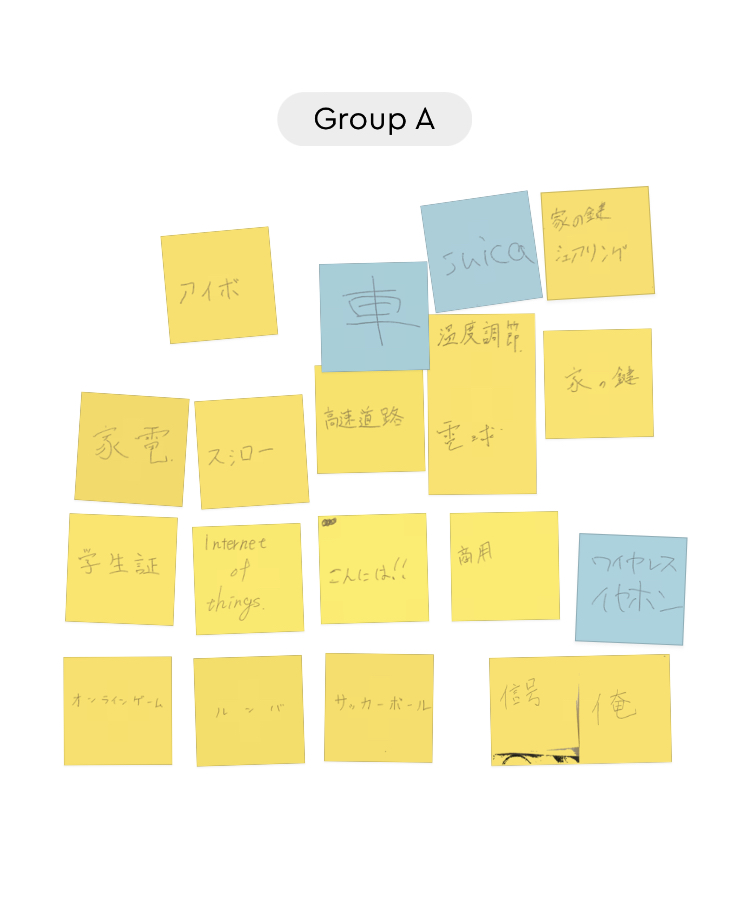
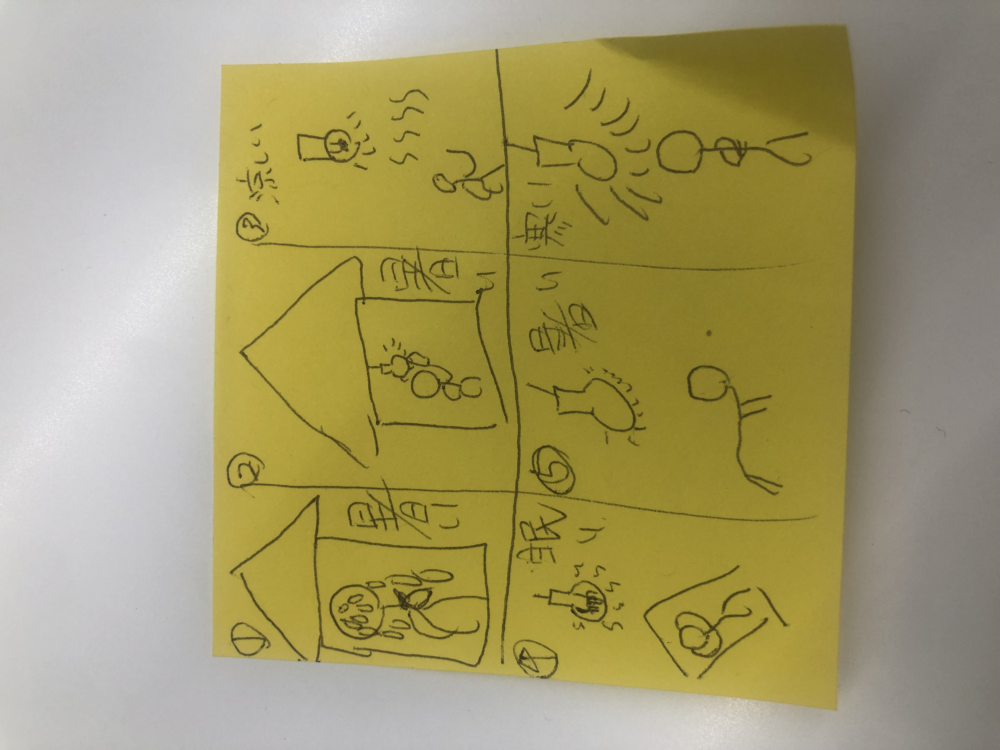

IoTについて
IoTとは何か
IoTとはInternet of Thingsの略であで 「モノ」に通信機能を持たせて、相互通信できるようにする技術のことである。
IoTを利用すれば自動的に認識、制御、測定が可能である。
またその他にも物流や交通、医療、ヘルスケア、農業、自動車などで実際に活用されてる。
IoTを生活に取り入れれば生活の利便性が上がる。
授業で行ったグループワーク ポストイット

